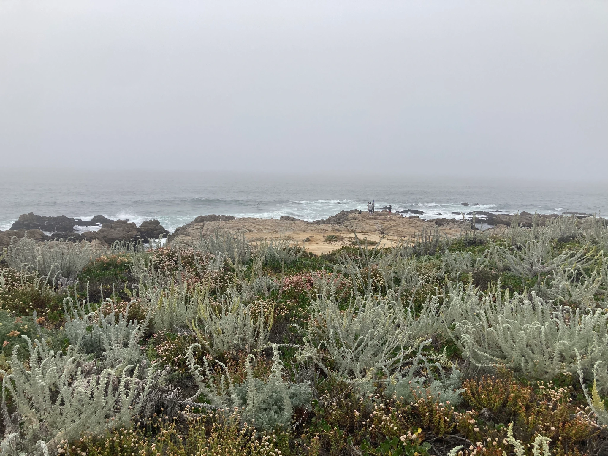
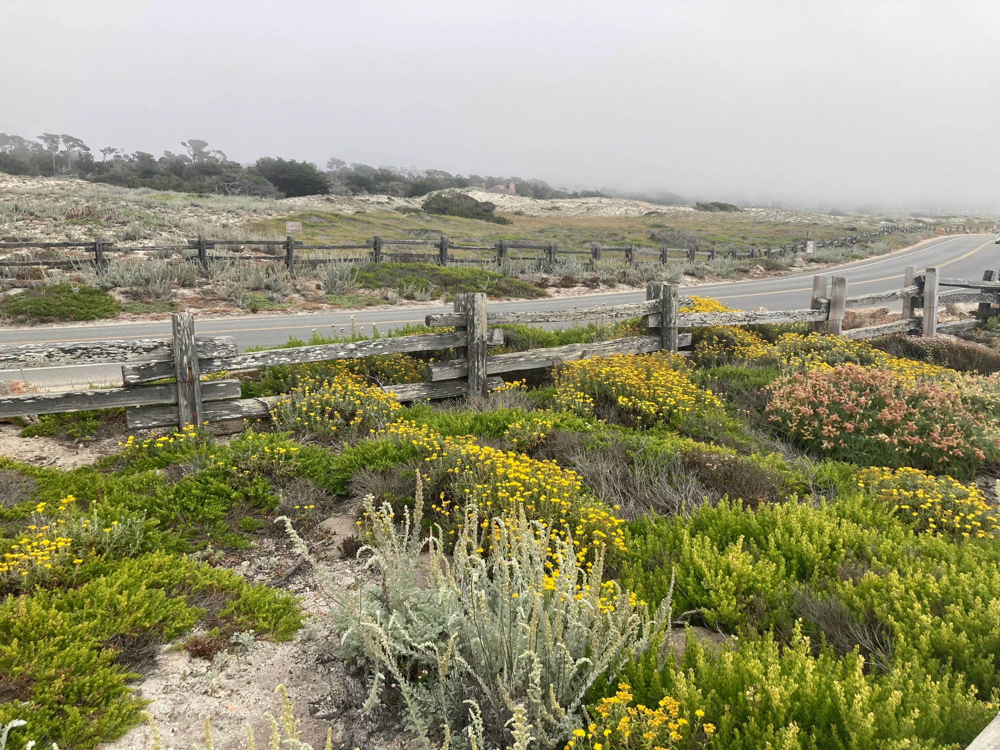
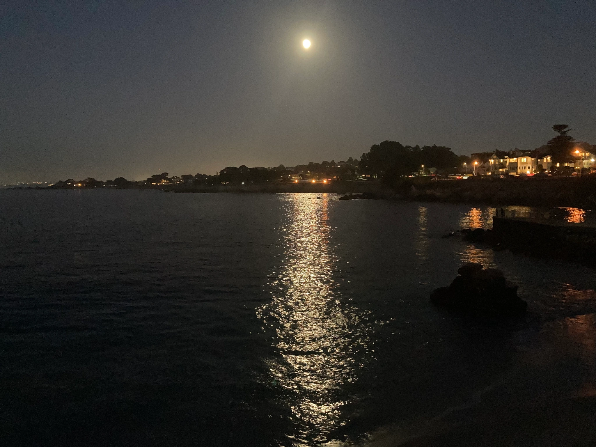
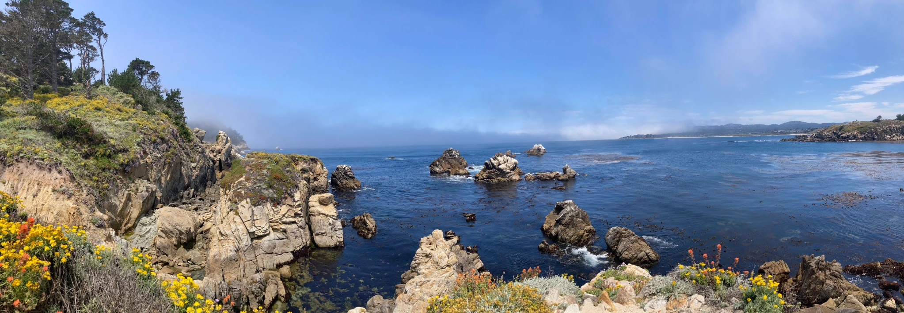
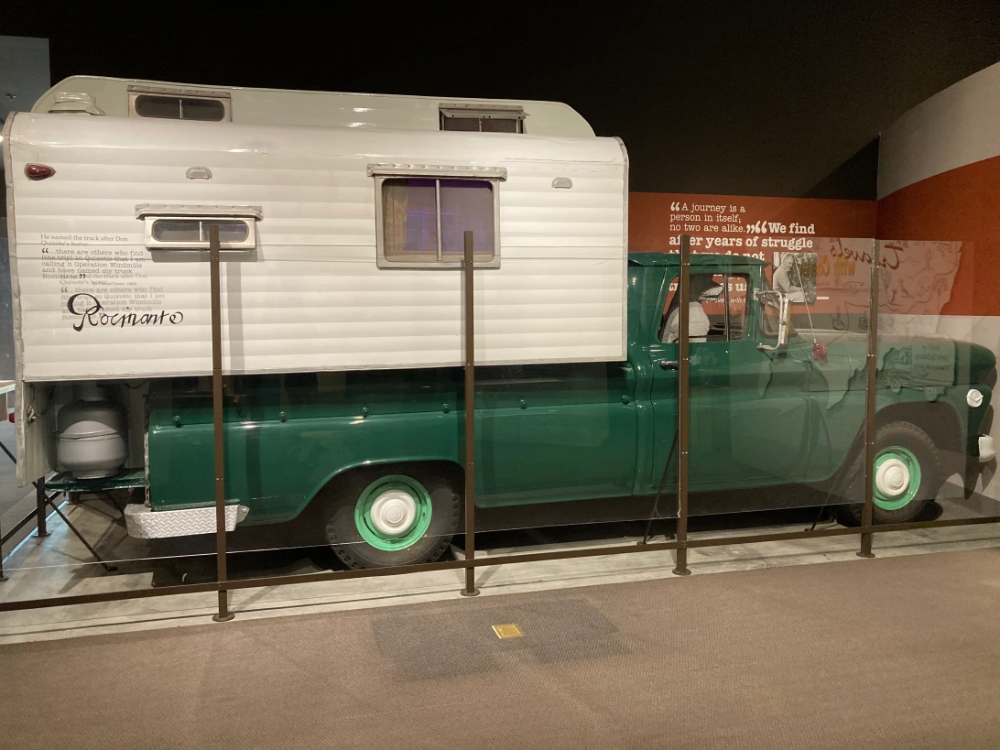

周记拖成了月记，月记终于要拖成季度记了。趁这周去Monterey闲逛了一下，赶紧上来记一笔。
独立日前的周末，不是很想出远门，加上湾区这两天高温，就决定去Monterey住一晚避暑。之前已经去过好几次了，所以这次没有必去的目的地，随性逛到哪算哪。
周六下午出门的时候就感受到了高温逼近，两个小时的车程后半段在炎炎烈日下开得昏昏欲睡。等到了Pacific Cove附近的Asilomar State Beach的时候，虽然天有点阴沉，但是气温格外舒爽，并不冷。可能这一段海滩不是很适合玩水，路边的停车位非常好找。

今年加州冬天降水多，春天野花茂盛，而且花期好长，没想到都入夏了还能在海岸边看到那么多的野花。云雾缭绕的还以为是去到了旧金山北面的Point Reyes。

晚上在城里吃的晚饭。因为座位间隔很近，难免听到邻桌的对话。我们和隔壁桌吃饭的进度差不多，等我们在看甜点的菜单的时候邻桌正好在跟服务员点单。菜单上有一道纯水果的甜点，列的就是fresh berries。我看到时整在想这也能单独当一道菜吗。邻桌就问了服务员
“你们这道新鲜水果的水果是这里产的吗？”
“不是，就是加州产的。”
“哦，那这些水果有什么特别的吗，还是就是普通水果？”
“就是挺普通的。”
邻桌停顿了两秒，“OK, thank you for your honesty. We will pass.”
我还以为这起码得是附近有机小农场小批量种的呢，感觉服务员就差没说这些草莓树莓是附近Costco买的了，哈哈。
吃完饭正好日落，去附近的一个小公园散步看海景。公园顶着个烂俗名字叫Lovers point，风景倒确实是不赖。满月映在平静的海面上，鎏金似的。

周日早上起来，喝完咖啡，磨磨蹭蹭开到Carmel小镇南边的Point Lobos State Park已经快11点了。运气不错，停到了公园门口附近1号公路上的最后一个路边停车位。似乎这个长周末来玩的人并不是很多。我们走到Whalers Cove后又沿着North Shore Trail走了一段。不知道是不是因为没什么海浪的关系，湾里海水的能见度很高，能看到水底的海草左右摇摆。Whalers Cove有一个潜水点，我们去的时候看到有好几波人正在整理装备。

Whalers Cove还有两个小小的博物馆。一个是展示捕鲸相关的Whaling Station Museum。19世纪中期有葡萄牙的捕鲸公司在这里活动。展陈的捕鲸叉和鲸油让我想起了今年读了1/4又没读完的Moby Dick，看来要等今年冬天再战了。另一个小木屋展出的是曾经在这里捕鱼的中国人和日本人的一些历史。1850左右，一些中国人航行到了这里，定居下来捕鱼为生，这也是美国最早的由中国移民建立的渔村。Monterey的海湾和早期的中国移民有很多的联系，有机会想要读一下这本书Chinese Gold。
下午租了个kayak沿着海岸线划了一下，远远地看到了几波海獭，在海藻里翻来滚去，好惬意。不过如果对看野生动物有兴趣的话，还是更建议去稍微北边一点的Elkhorn slough自然保护区kayak。海獭数量更多，还有很多鸟类可以看。
最后回程路上还去了位于Salinas的National Steinbeck Center. John Steinbeck是在Salinas出生长大的, 写的不少小说都是以这里为背景。城里的小书店还有他的专属书架，可以说是Monterey的hometown boy了。博物馆主要以他的作品为主线做的展陈，如果读过书再来应该会比较有感觉。我只读过一本他写的游记Travels with charley，时间有点久了，只记得文笔还挺幽默的，以及他没能入境加拿大，因为跟他一起road trip的狗charley没有检疫报告，加拿大海关告诉他如果入了境之后很有可能回不了美国。在博物馆里看到了他们当时用的van。

愤怒的葡萄一直在我的to read list（但还没读完）上。这次在博物馆看介绍才知道这本书也曾经在美国好几个地方被禁被烧 （npr也有相关的介绍），因为当时一些人认为他在书里对他们对migrant的对待描述与事实不符。而苏联认为他的书是评判资本主义的，所以在冷战初期特许他去苏联考察。他回来写了本游记A Russian Journal。书里写到了基辅/乌克兰地区在二战后的惨状，联想到现在也是挺难过的。